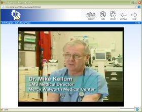

Emergency Medical Services
Training Project
"Therefore in medicine we ought to know
the causes of sickness and health."
Avicenna

This is our latest section to the training area, and it is somewhat different from the rest of the site. All of our other training materials focus on enhancing training for the dedicated individuals who respond to calls for help. This section is devoted to those who go out into the general population and teach interested individuals the basics on how to survive an incident or render aid to a sick or injured person before the arrival of First Responders and EMS.
Call and Pump Program
Continuous Cardiac Compressions
|
Call and Pump is "CPR" simplified. It is intended for use by laypersons. In the Wisconsin counties of Rock and Walworth it can also by used by First Responders and EMTs as part of our demonstration project. It is to be used only in adult (over 15 yo) cardiac arrests. It is not to be used in children and in cases of arrest caused by choking, drowning, and other lung problems. Individuals interested in care of these latter cases should seek training in traditional CPR that includes managing airway and breathing. Such training is still mandatory for professional and first responders. |
|
|
This web-based training program demonstrates the basic ideas behind the Call and Pump program. It includes two videos that showcase exactly how the program works, and explains how the average, untrained citizen can have a dramatic improvement in the outcomes from sudden cardiac death. The program can be run independently in a web browser, or can be incorporated into a learning content management system such as Moodle.
Download the "Call and Pump"
Training Program. For more information on the "Call and Pump" program, please visit their web site at http://www.callandpump.org. Here you will find a wealth of information on the program, including the project's proposal, survival statistics, protocols that were used, etc. |
|
|  |
| 18 March 2010 |